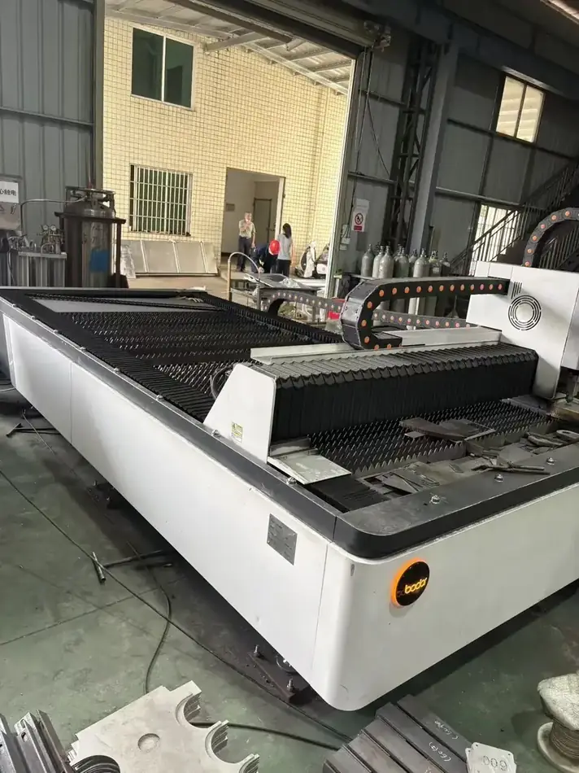
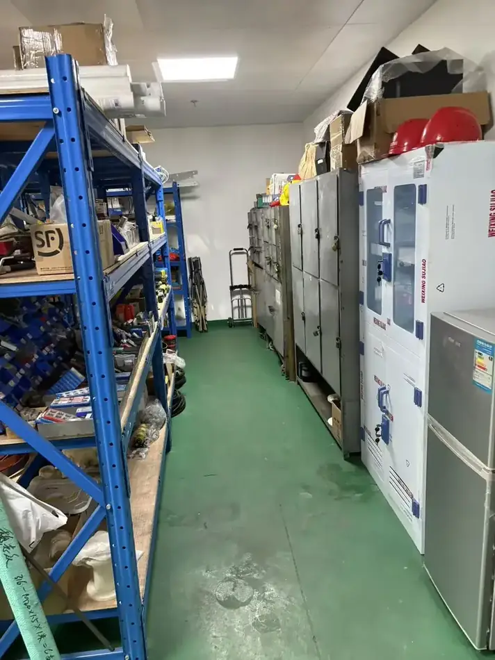
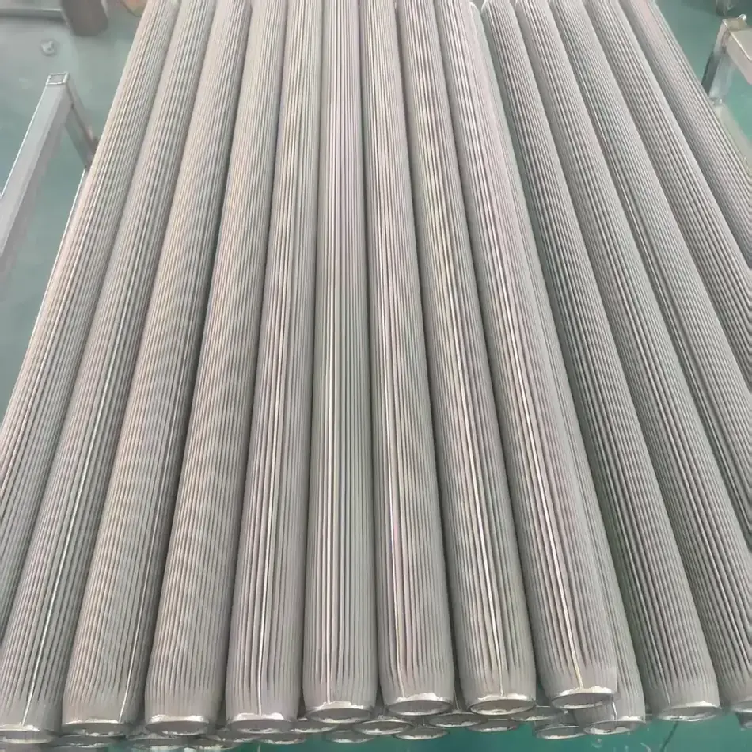

The chain, step by step
Bundle drawing
Thousands of wires are drawn together through successive dies and then separated, giving filaments down to 2 µm. The conductor is the metal itself, so properties do not fade with washing or flexing.
Cutting, opening and blending
Filament is chopped to 1–38 mm, opened into sliver or tow, and blended with aramid, polyester, PPS or cotton at ratios from 0.5 to 100% steel.
Spinning, knitting, braiding, weaving
Yarn is spun and then knitted into elastic sleeves, braided into round sleeves, or woven into cloth and tape up to 1500 mm wide.
Web laying
Non-woven webs are laid with a controlled fiber diameter in each layer — this is where the graded pore structure of the finished felt is decided.
Vacuum sintering
Layers are laminated and sintered under vacuum so that every fiber contact is metallurgically bonded. The result is a one-piece metal structure, not a pressed mat.
Element assembly
Media is pleated or wound, laminated with inner support and outer protective mesh, fitted with a perforated core and end fittings, and welded.
Equipment fabrication
Tanks, troughs and skids for oil recovery systems are fabricated and the coalescing elements fitted.
Inspection
Bubble point, permeability, efficiency, porosity, thickness and weight are measured, and an inspection report is issued for the lot.
Production and finished goods




Send us your operating conditions, and we will send samples.
Temperature, medium, pressure, filtration rating, resistance or porosity — give us the numbers you work with and our engineers will recommend a configuration, quote it and arrange samples for your own testing.